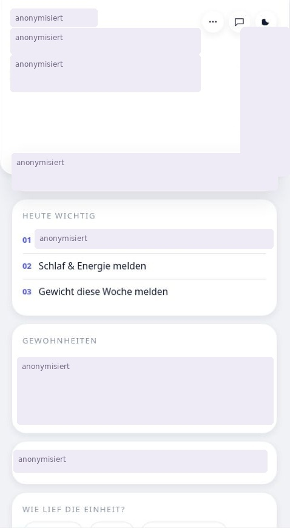

Dein Plan steht.
Jetzt bleib dran.
Dein Trainings- und Ernährungsplan. Tägliche Check-ins über WhatsApp oder Telegram. Alles verbunden in deiner PULSE-App.
CHF 98 pro Monat. Monatlich kündbar.
So begleitet dich PULSE durch den Tag
Ein Check-in am Morgen, ein Foto vom Essen, ein kurzes Trainingsupdate. Wähle einen Moment und sieh, wie Chat und App zusammenarbeiten.

Simulation mit Beispieldaten. Keine Live-Verarbeitung.

Mehr Überblick.
Weniger Routine.
Der Morgen-Check-in ist erfasst. Der Trainingsplan bleibt sichtbar.
Bei relevanten Fragen oder nötigen Freigaben kann der Coach übernehmen.
Du schreibst im Chat. PULSE hält den Zusammenhang mit deinem Plan und deinem Fortschritt fest.
Erlebe PULSE in 3 Minuten.
Das Originalvideo. Mit Ton abspielen.
Dein ganzes Coaching.
In deiner Tasche.
Training, Ernährung und Fortschritt an einem Ort. Wähle eine Ansicht und entdecke die echte PULSE-App.

Originalansichten mit anonymisierten oder illustrativen Beispieldaten. In der App-Ansicht kannst du scrollen.
Deine Gespräche. Deine Daten.
Deine Privatsphäre.
Deine Onboarding-Datenbank steht in Zürich. Der Fragebogen wird vor der Speicherung verschlüsselt. Für Messenger, KI und Zahlung sind weitere Dienste beteiligt.
Welche Daten wohin fliessen, steht in unserer Datenschutzerklärung.
Ein Plan. Begleitung für jeden Tag.
Dein Plan gibt die Richtung vor. PULSE hilft dir bei der Umsetzung: mit Check-ins, Erinnerungen und deiner verbundenen Coaching-App.
Digitale Begleitung. Keine menschliche Trainerbetreuung rund um die Uhr und keine medizinische Beratung.
Erlebe die Coaching-DemoPULSE Personal
Mindestlaufzeit ein Monat, danach monatlich kündbar. Der Preis beinhaltet allfällige anwendbare Steuern.
- Persönlicher Assistant über den unterstützten Messenger
- Proaktive Check-ins und Erinnerungen
- Dein hinterlegter Trainingsplan mit Übungsvideos
- Ernährungsziele und manuelles Tracking
- Fortschrittsübersicht und Wochenreports
Jederzeit zum Ende des bezahlten Monats kündbar. Die Verfügbarkeit der Online-Bestellung wird geprüft. Prüfe deine Angaben im Onboarding und bestätige die Bestellung anschliessend bei Stripe.
Häufige Fragen
Die PULSE Personal Mitgliedschaft umfasst den digitalen Assistant über einen unterstützten Messenger sowie die PULSE-App mit Trainings- und Ernährungsfunktionen, Tracking und Fortschrittsübersicht. Der verbindliche Leistungsumfang steht in den Mitgliedschaftsbedingungen.
Nach der Anmeldung richtest du deine Ziele und deinen Coaching-Kontext ein. Anschliessend nutzt du den unterstützten Messenger für die tägliche Begleitung und die PULSE-App für Trainingsplan, Ernährung und Fortschritt. Die konkreten Einrichtungsschritte werden beim Start erklärt.
Eine Fitness-App zeigt dir Pläne und Daten. PULSE ergänzt einen Personal Assistant, der deinen Plan kennt, dich im Alltag erinnert, auf Fragen reagiert und dir hilft, konsequent dranzubleiben. Chat und App gehören zusammen.
Die digitale PULSE-Begleitung ist als 24/7-Unterstützung konzipiert: nicht als persönliche Betreuung durch einen menschlichen Trainer. Verfügbarkeit, unterstützte Kanäle und mögliche Nutzungsgrenzen werden vor dem Kauf verbindlich ausgewiesen.
Ja. Proaktive Check-ins, Erinnerungen und kleine Rückfragen sind der Kern des Coaching-Erlebnisses. Sie orientieren sich an deinen Zielen und deinem Plan.
Das sind zentrale vorgesehene PULSE-Abläufe. Die Demo zeigt, wie erfasste Inhalte analysiert, bestätigt und in die App übernommen werden. Welche Foto- und Sprachfunktionen im jeweiligen Leistungsumfang freigeschaltet sind, wird vor dem Kauf transparent ausgewiesen.
Die Onboarding-Datenbank liegt in Zürich. Je nach Funktion sind weitere Anbieter beteiligt, darunter der gewählte Messenger. Die Details zu den Datenwegen findest du in der Datenschutzerklärung.
Nein. Du kannst PULSE Personal direkt als Privatperson nutzen: unabhängig von einem Fitnessstudio. Falls dein Coach PULSE anbietet, kannst du es auch im Rahmen deiner bestehenden Betreuung erhalten.
PULSE unterstützt dich im Alltag und hilft beim Dranbleiben. Es ersetzt keine medizinische Diagnose oder erforderliche persönliche fachliche Betreuung.
Die Mindestlaufzeit beträgt einen Monat. Danach ist die Mitgliedschaft monatlich kündbar. Kündige vor Beginn der nächsten Abrechnungsperiode per E-Mail oder über dein bereitgestelltes Abo-Portal.